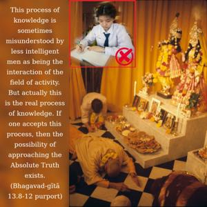
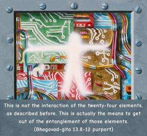
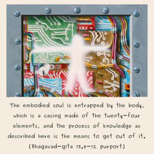
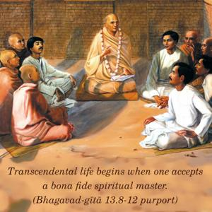

Humility; pridelessness; nonviolence; tolerance; simplicity; approaching a bona fide spiritual master; cleanliness; steadiness; self-control; renunciation of the objects of sense gratification; absence of false ego; the perception of the evil of birth, death, old age and disease; detachment; freedom from entanglement with children, wife, home and the rest; even-mindedness amid pleasant and unpleasant events; constant and unalloyed devotion to Me; aspiring to live in a solitary place; detachment from the general mass of people; accepting the importance of self-realization; and philosophical search for the Absolute Truth – all these I declare to be knowledge, and besides this whatever there may be is ignorance.




This process of knowledge is sometimes misunderstood by less intelligent men as being the interaction of the field of activity. But actually this is the real process of knowledge. If one accepts this process, then the possibility of approaching the Absolute Truth exists. This is not the interaction of the twenty-four elements, as described before. This is actually the means to get out of the entanglement of those elements. The embodied soul is entrapped by the body, which is a casing made of the twenty-four elements, and the process of knowledge as described here is the means to get out of it. Of all the descriptions of the process of knowledge, the most important point is described in the first line of the eleventh verse. Mayi cānanya-yogena bhaktir avyabhicāriṇī: the process of knowledge terminates in unalloyed devotional service to the Lord. So if one does not approach, or is not able to approach, the transcendental service of the Lord, then the other nineteen items are of no particular value. But if one takes to devotional service in full Kṛṣṇa consciousness, the other nineteen items automatically develop within him. As stated in Śrīmad-Bhāgavatam (5.18.12), yasyāsti bhaktir bhagavaty akiñcanā sarvair guṇais tatra samāsate surāḥ. All the good qualities of knowledge develop in one who has attained the stage of devotional service. The principle of accepting a spiritual master, as mentioned in the eighth verse, is essential. Even for one who takes to devotional service, it is most important. Transcendental life begins when one accepts a bona fide spiritual master. The Supreme Personality of Godhead, Śrī Kṛṣṇa, clearly states here that this process of knowledge is the actual path. Anything speculated beyond this is nonsense.
As for the knowledge outlined here, the items may be analyzed as follows. Humility means that one should not be anxious to have the satisfaction of being honored by others. The material conception of life makes us very eager to receive honor from others, but from the point of view of a man in perfect knowledge – who knows that he is not this body – anything, honor or dishonor, pertaining to this body is useless. One should not be hankering after this material deception. People are very anxious to be famous for their religion, and consequently sometimes it is found that without understanding the principles of religion one enters into some group which is not actually following religious principles and then wants to advertise himself as a religious mentor. As for actual advancement in spiritual science, one should have a test to see how far he is progressing. He can judge by these items.
Nonviolence is generally taken to mean not killing or destroying the body, but actually nonviolence means not to put others into distress. People in general are trapped by ignorance in the material concept of life, and they perpetually suffer material pains. So unless one elevates people to spiritual knowledge, one is practicing violence. One should try his best to distribute real knowledge to the people, so that they may become enlightened and leave this material entanglement. That is nonviolence.
Tolerance means that one should be practiced to bear insult and dishonor from others. If one is engaged in the advancement of spiritual knowledge, there will be so many insults and much dishonor from others. This is expected because material nature is so constituted. Even a boy like Prahlāda, who, only five years old, was engaged in the cultivation of spiritual knowledge, was endangered when his father became antagonistic to his devotion. The father tried to kill him in so many ways, but Prahlāda tolerated him. So there may be many impediments to making advancement in spiritual knowledge, but we should be tolerant and continue our progress with determination.
Simplicity means that without diplomacy one should be so straightforward that he can disclose the real truth even to an enemy. As for acceptance of the spiritual master, that is essential, because without the instruction of a bona fide spiritual master one cannot progress in the spiritual science. One should approach the spiritual master with all humility and offer him all services so that he will be pleased to bestow his blessings upon the disciple. Because a bona fide spiritual master is a representative of Kṛṣṇa, if he bestows any blessings upon his disciple, that will make the disciple immediately advanced without the disciple’s following the regulative principles. Or, the regulative principles will be easier for one who has served the spiritual master without reservation.
Cleanliness is essential for making advancement in spiritual life. There are two kinds of cleanliness: external and internal. External cleanliness means taking a bath, but for internal cleanliness one has to think of Kṛṣṇa always and chant Hare Kṛṣṇa, Hare Kṛṣṇa, Kṛṣṇa Kṛṣṇa, Hare Hare/ Hare Rāma, Hare Rāma, Rāma Rāma, Hare Hare. This process cleans the accumulated dust of past karma from the mind.
Steadiness means that one should be very determined to make progress in spiritual life. Without such determination, one cannot make tangible progress. And self-control means that one should not accept anything which is detrimental to the path of spiritual progress. One should become accustomed to this and reject anything which is against the path of spiritual progress. This is real renunciation. The senses are so strong that they are always anxious to have sense gratification. One should not cater to these demands, which are not necessary. The senses should only be gratified to keep the body fit so that one can discharge his duty in advancing in spiritual life. The most important and uncontrollable sense is the tongue. If one can control the tongue, then there is every possibility of controlling the other senses. The function of the tongue is to taste and to vibrate. Therefore, by systematic regulation, the tongue should always be engaged in tasting the remnants of foodstuffs offered to Kṛṣṇa and chanting Hare Kṛṣṇa. As far as the eyes are concerned, they should not be allowed to see anything but the beautiful form of Kṛṣṇa. That will control the eyes. Similarly, the ears should be engaged in hearing about Kṛṣṇa and the nose in smelling the flowers offered to Kṛṣṇa. This is the process of devotional service, and it is understood here that Bhagavad-gītā is simply expounding the science of devotional service. Devotional service is the main and sole objective. Unintelligent commentators on the Bhagavad-gītā try to divert the mind of the reader to other subjects, but there is no other subject in Bhagavad-gītā than devotional service.
False ego means accepting this body as oneself. When one understands that he is not his body and is spirit soul, he comes to his real ego. Ego is there. False ego is condemned, but not real ego. In the Vedic literature (Bṛhad-āraṇyaka Upaniṣad 1.4.10) it is said, ahaṁ brahmāsmi: I am Brahman, I am spirit. This “I am,” the sense of self, also exists in the liberated stage of self-realization. This sense of “I am” is ego, but when the sense of “I am” is applied to this false body it is false ego. When the sense of self is applied to reality, that is real ego. There are some philosophers who say we should give up our ego, but we cannot give up our ego, because ego means identity. We ought, of course, to give up the false identification with the body.
One should try to understand the distress of accepting birth, death, old age and disease. There are descriptions in various Vedic literatures of birth. In the Śrīmad-Bhāgavatam the world of the unborn, the child’s stay in the womb of the mother, its suffering, etc., are all very graphically described. It should be thoroughly understood that birth is distressful. Because we forget how much distress we have suffered within the womb of the mother, we do not make any solution to the repetition of birth and death. Similarly at the time of death there are all kinds of sufferings, and they are also mentioned in the authoritative scriptures. These should be discussed. And as far as disease and old age are concerned, everyone gets practical experience. No one wants to be diseased, and no one wants to become old, but there is no avoiding these. Unless we have a pessimistic view of this material life, considering the distresses of birth, death, old age and disease, there is no impetus for our making advancement in spiritual life.
As for detachment from children, wife and home, it is not meant that one should have no feeling for these. They are natural objects of affection. But when they are not favorable to spiritual progress, then one should not be attached to them. The best process for making the home pleasant is Kṛṣṇa consciousness. If one is in full Kṛṣṇa consciousness, he can make his home very happy, because this process of Kṛṣṇa consciousness is very easy. One need only chant Hare Kṛṣṇa, Hare Kṛṣṇa, Kṛṣṇa Kṛṣṇa, Hare Hare/ Hare Rāma, Hare Rāma, Rāma Rāma, Hare Hare, accept the remnants of foodstuffs offered to Kṛṣṇa, have some discussion on books like Bhagavad-gītā and Śrīmad-Bhāgavatam, and engage oneself in Deity worship. These four things will make one happy. One should train the members of his family in this way. The family members can sit down morning and evening and chant together Hare Kṛṣṇa, Hare Kṛṣṇa, Kṛṣṇa Kṛṣṇa, Hare Hare/ Hare Rāma, Hare Rāma, Rāma Rāma, Hare Hare. If one can mold his family life in this way to develop Kṛṣṇa consciousness, following these four principles, then there is no need to change from family life to renounced life. But if it is not congenial, not favorable for spiritual advancement, then family life should be abandoned. One must sacrifice everything to realize or serve Kṛṣṇa, just as Arjuna did. Arjuna did not want to kill his family members, but when he understood that these family members were impediments to his Kṛṣṇa realization, he accepted the instruction of Kṛṣṇa and fought and killed them. In all cases, one should be detached from the happiness and distress of family life, because in this world one can never be fully happy or fully miserable.
Happiness and distress are concomitant factors of material life. One should learn to tolerate, as advised in Bhagavad-gītā. One can never restrict the coming and going of happiness and distress, so one should be detached from the materialistic way of life and be automatically equipoised in both cases. Generally, when we get something desirable we are very happy, and when we get something undesirable we are distressed. But if we are actually in the spiritual position these things will not agitate us. To reach that stage, we have to practice unbreakable devotional service. Devotional service to Kṛṣṇa without deviation means engaging oneself in the nine processes of devotional service – chanting, hearing, worshiping, offering respect, etc. – as described in the last verse of the Ninth Chapter. That process should be followed.
Naturally, when one is adapted to the spiritual way of life, he will not want to mix with materialistic men. That would go against his grain. One may test himself by seeing how far he is inclined to live in a solitary place, without unwanted association. Naturally a devotee has no taste for unnecessary sporting or cinema-going or enjoying some social function, because he understands that these are simply a waste of time. There are many research scholars and philosophers who study sex life or some other subject, but according to Bhagavad-gītā such research work and philosophical speculation have no value. That is more or less nonsensical. According to Bhagavad-gītā, one should make research, by philosophical discretion, into the nature of the soul. One should make research to understand the self. That is recommended here.
As far as self-realization is concerned, it is clearly stated here that bhakti-yoga is especially practical. As soon as there is a question of devotion, one must consider the relationship between the Supersoul and the individual soul. The individual soul and the Supersoul cannot be one, at least not in the bhakti conception, the devotional conception of life. This service of the individual soul to the Supreme Soul is eternal, nityam, as it is clearly stated. So bhakti, or devotional service, is eternal. One should be established in that philosophical conviction.
In the Śrīmad-Bhāgavatam (1.2.11) this is explained. Vadanti tat tattva-vidas tattvaṁ yaj jñānam advayam. “Those who are actually knowers of the Absolute Truth know that the Self is realized in three different phases, as Brahman, Paramātmā and Bhagavān.” Bhagavān is the last word in the realization of the Absolute Truth; therefore one should reach up to that platform of understanding the Supreme Personality of Godhead and thus engage in the devotional service of the Lord. That is the perfection of knowledge.
Beginning from practicing humility up to the point of realization of the Supreme Truth, the Absolute Personality of Godhead, this process is just like a staircase beginning from the ground floor and going up to the top floor. Now on this staircase there are so many people who have reached the first floor, the second or the third floor, etc., but unless one reaches the top floor, which is the understanding of Kṛṣṇa, he is at a lower stage of knowledge. If anyone wants to compete with God and at the same time make advancement in spiritual knowledge, he will be frustrated. It is clearly stated that without humility, understanding is not truly possible. To think oneself God is most puffed up. Although the living entity is always being kicked by the stringent laws of material nature, he still thinks, “I am God” because of ignorance. The beginning of knowledge, therefore, is amānitva, humility. One should be humble and know that he is subordinate to the Supreme Lord. Due to rebellion against the Supreme Lord, one becomes subordinate to material nature. One must know and be convinced of this truth.